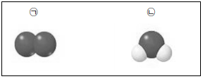

I. 물질의 구성
2. 물질의 구성 입자
01. 물질을 이루는 원자
- 은 물질을 이루는 기본 성분이고, 는 물질을 이루는 기본 입자이다.
- 원자는 과 전자로 구성된다.
- 원자는 종류에 따라 의 개수가 다르다.
- 잘소 원자의 모형을 종이에 그려 나타내려고 한다. 어떤 과정으로 그릴 수 있는지 설명해 보자
... ...............................
원소, 원자, 원자핵, 전자
질소 원자의 전자 수가 7개임을 확인한다. 종이에 원을 그리고 중심에 원자핵을 그린다. 원자핵 주위에 전자 7개가 고르게 배치하도록 그린다.
02. 원자가 결합한 분자
- 독립된 입자로 존재하여 물질의 성질을 나타내는 가장 작은 입자를 무엇이라고 하는가?
- 암모니아 분자를 이루는 원소의 종류는 가지이고, 원자의 수는 총 개이다.
- 물 분자는 원자 2개와 원자 1개로 이루어진다.
- 분자의 수가 원자의 수보다 훨씬 더 많다. 그 까닭을 설명해 보자
... ...............................
분자, 2/4 , 수소/산소
결합하는 원자의 종류는 같지만 원자의 개수가 다른 서로 다른 종류의 분자이기 때문이다.
03. 기호로 나타내는 원소와 분자
- 빈칸에 알맞은 원소 기호를 쓰시오.
(1) 수소 (2) 헬륨 (3) 칼슘 (4) 염소 - 원소 기호를 사용하여 분자를 이루는 원자의 종류와 수를 나타낸 것을 무엇이라고 하는가 ?
- 물(H2O)과 과산화 수소(H2O2)를 이루는 원소의 종류는 수소와 산소로 같지만, 두 물질의 성질은 서로 다르다. 그 까닭을 설명해 보자
... ...............................
H / He / Ca / Cl , 분자식
원소의 종류는 같지만 원자의 개수가 다른 서로 다른 종류의 분자이기 때문이다.
tips_and_updates 아래 두 분자 모형의 이름으로 가장 적절한 것은?

| (A) | (B) | ||
| ① | 수소 | 산소 | |
| ② | 산소 | 물 | |
| ③ | 물 | 일산화탄소 | |
| ④ | 산소 | 암모니아 | |
| ⑤ | 일산화탄소 | 암모니아 |
정답 : 2
해설 : 어두운 색- 산소, 밝은색- 수소
출처 : 2021년 1학기 중간고사
tips_and_updates 다음 그림은 원자의 구조를 나타낸 것이다.

① A는 원자핵으로 원자의 중심에 자리잡고 있다.
② B는 전자로, A 주위를 움직이고 있으며, 원자내의 대부분의 공간을 차지한다.
③ A가 띠는 (+)전하량과 B들이 띠는 (-)전하량이 같아서 원자는 전기적으로 중성이다.
④ 원자의 종류에 따라 B의 개수가 다르다.
⑤ B는 A보다 크기가 크고, 질량도 커서 원자 질량의 대부분을 차지한다.
정답 : 5
해설 : 원자핵(A)은 전자(B)보다 크기가 크고, 질량도 커서 원자 질량의 대부분을 차지한다.
출처 : 2017년 1학기 중간고사
tips_and_updates 다음은 원자의 구조를 그린 것이다. 이에 대한 설명으로 옳지 않은 것은?
① A는 원자핵이고, B는 전자이다.
② 원자의 종류에 따라 A의 개수가 다르다.
③ A는 (+)전하를 띠고, B는 (-)전하를 띤다.
④ A는 원자의 중심에 위치하고, B는 A 주위를 끊임없이 움직이고 있다.
⑤ (+)전하량과 (-)전하량이 같아서 원자는 항상 중성이다.
정답 : 2
해설 : 원자의 종류가 다르면 원자핵의 전하량이 다르고 전자의 개수가 다르다.
출처 : 2019년 1학기 중간고사
tips_and_updates 다음 <보기> 에서 분자를 이루는 원자의 수가 같은 것은?
< 보 기 >
㉠ CO ㉡ HCl ㉢ CO2 ㉣ NH3
① ㉠, ㉡
② ㉡, ㉢
③ ㉠, ㉢
④ ㉢, ㉣
⑤ ㉠, ㉣
정답 : 1
해설 : CO, HCl는 모두 2개의 원자로 구성
출처 : 2021년 1학기 중간고사
tips_and_updates 분자에 대한 설명으로 옳은 것만을 <보기> 에서 있는 대로 고른 것은?
< 보 기 >
㉠ 독립된 입자로 존재하여 물질의 성질을 나타내는 가장 작은 입자이다.
㉡ 분자는 결합한 원자와 성질이 비슷한 입자이다.
㉢ 결합하는 원자의 종류가 같아도 원자의 개수가 다르면 다른 분자이다.
① ㉠
② ㉡
③ ㉠, ㉡
④ ㉠, ㉢
⑤ ㉠, ㉡, ㉢
정답 : 4
해설 : 분자는 결합한 원자와 성질이 다른 입자이다.
출처 : 2021년 1학기 중간고사
tips_and_updates 다음 <보기> 에서 분자를 이루는 원자의 수가 같은 것은?
< 보 기 >
㉠ CO ㉡ HCl ㉢ CO2 ㉣ NH3
① ㉠, ㉡
② ㉡, ㉢
③ ㉠, ㉢
④ ㉢, ㉣
⑤ ㉠, ㉣
정답 : 1
해설 : CO, HCl는 모두 2개의 원자로 구성
출처 : 2021년 1학기 중간고사